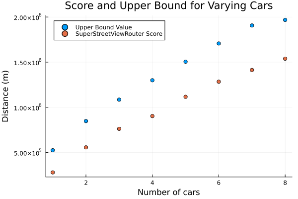
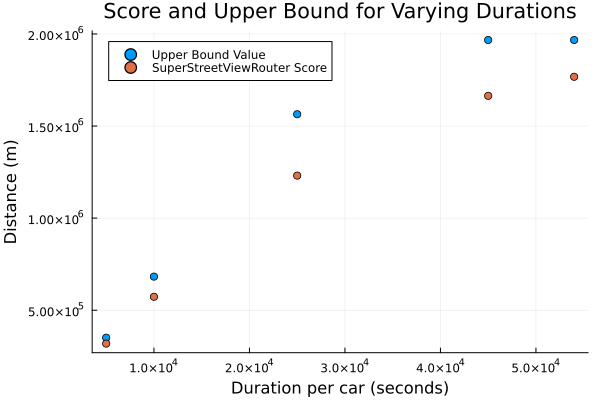

Analysis
The upper bound of the algorithm can be described as the maximum score achievable on a given city data of which we know some information. In this section, a reasonable upper bound will be derived beginning from simple assumptions and gradually accounting for increasing complexity.
Let's begin by considering a City object whose streets so exceed the number of cars and total duration that all cars can run freely without fear of overlap. Here we assume that the traversal penalty described above is sufficient to prevent overlap in the presence of an abudance of available streets. With all $\text{num}\textunderscore\text{cars}$ cars running for $duration$ seconds each, there are $n_{cars} \cdot duration$ seconds during which streets will be traversed.
To generate a (safely conservative) distance score from the available time, we introduce a normalized average rate for the City object as described below:
\[speed_{avg} = 1.5 \cdot \frac{\displaystyle \sum_{s \in S} s_d \cdot \frac{s_d}{s_t}}{\displaystyle \sum_{s \in S} s_d}\]
\[S\]
is the set of streets in the the city
\[s_d\]
is the distance of street $s \in S$
\[s_t\]
is the duration of street $s \in S$
Using this value as an approximation for the typical speed at which a car can traverse any given street in the City object, we arrive at a simplistic upper bound (measured in meters) of
\[score \leq n_{cars} \cdot duration \cdot speed_{avg}\]
Now applying this model to a more general City object requires accounting for two possibilities related to scarcity:
- Suppose a City object contains less distance in its streets than the value obtained from the expression above?
- Suppose cars are forced to overlap one another in the course of their paths?
Handling the first situation is simple. We cap our bound at the total distance of the City object:
\[score \leq \min(n_{cars} \cdot duration \cdot speed_{avg}, d_{total})\]
where $d_{total}=\sum_{s \in S} s_d$
To address overlap, consider how its effect ranges from absolute (the score of $n$ cars is equivalent to the score of $1$) to non-existent (ideal model above). Expressed in terms of our quantities,
$\min(duration \cdot speed{avg}, d{total}) \leq d \leq \min(n{cars} \cdot duration \cdot speed{avg}, d_{total}) $
To simplify our expression, let's condense the effect of overlap into a single factor, $o_f$, like so:
\[score \leq \min(n_{cars} \cdot duration \cdot speed_{avg} \cdot o_f, d_{total})\]
where $\frac{1}{n_{cars}} \leq o_f \leq 1$
A simple way to construct $o_f$ is to use some version of a sign-like function which varies between $\frac{1}{n_{cars}}$ and $1$ in value. $\tanh(x)$ does the trick, and shifted and scaled between our values it becomes
\[o_f=\frac{1}{2} \cdot \left(1-\frac{1}{n_{cars}} \right) \tanh(x) + \frac{1}{2} \cdot \left( 1 + \frac{1}{n_{cars}} \right)\]
The input variable to the $\tanh$ function must be a measure of the amount of overlap we expect in a city of fixed size. To represent this, we introduce the quantity $cars_{supported} = \frac{d_{total}}{t_{total} \cdot speed_{avg}}$. This normalized difference between the number of cars the city can support and the number of cars in the input file, scaled by the number of cars, is what we use in our overlap factor value:
\[o_f=\frac{1}{2} \cdot \left(1-\frac{1}{n_{cars}} \right) \tanh\left(\frac{1}{n_{cars}} \cdot \frac{cars_{supported}-n_{cars}}{cars_{supported}}\right) + \frac{1}{2} \cdot \left( 1 + \frac{1}{n_{cars}} \right)\]
Combining all the components above, we arrive at the following inequality for all feasible distance scores $d$ from our algorithm:
\[score \leq \min\left(n_{cars} \cdot duration \cdot speed_{avg} \cdot \frac{1}{2} \cdot \left(1-\frac{1}{n_{cars}} \right) \tanh\left(\frac{cars_{supported}-n_{cars}}{cars_{supported}}\right) + \frac{1}{2} \cdot \left( 1 + \frac{1}{n_{cars}} \right), d_{total}\right)\]
Experimental Confirmation
Since we have a well defined upper bound for any solution from SuperStreetViewRouter.jl and a solver, experimental verification is easy to generate. See graphs below which plot solution scores from the library against upper bound values, varying $1$ parameter at a time.
Score vs. Upper Bound Across Cars

Score vs. Upper Bound Across Durations
